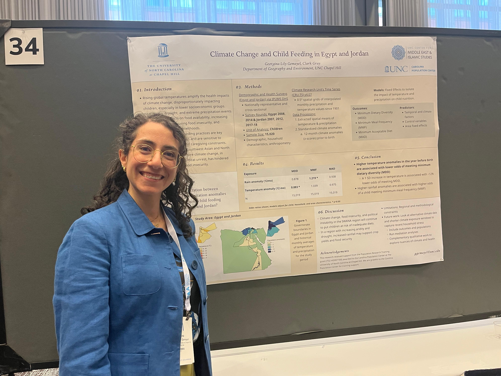
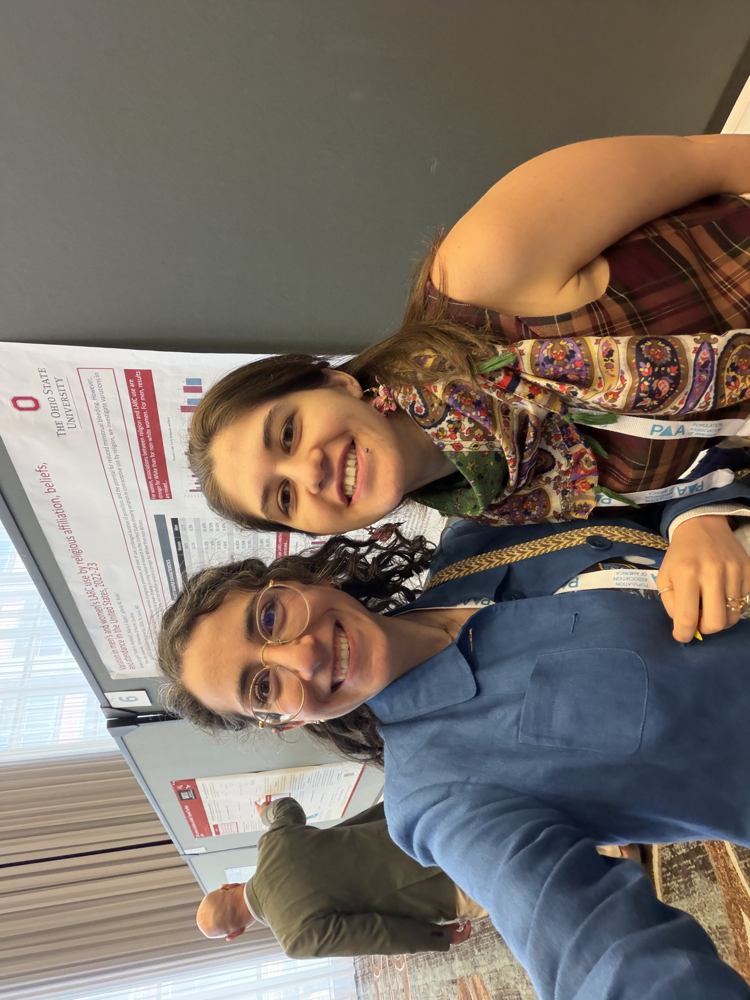

Meetings & Events
Past presentations, activities, and group gatherings
SWANA Pop Events at PAA 2026

- Carmen Gutierrez / Fatima Touma — Surviving and Thriving Under New Funding and Research Priorities (Panelists)
- Fatima Touma — Examining Nativity and U.S. Adult Health: Do Immigrant Archetypes and State-Level Context Play Roles? (Oral)
- Georgina Gemayel / Alfredo Rojas — Climate anomalies increase anemia risk in children aged 6-59 months (Poster)
- Georgina Gemayel — Climate Extremes and Minimum Dietary Diversity in Young Children: Evidence from Egypt and Jordan (Poster)
- Jasmine Abdel Ghany — Extreme heat threatens progress on antenatal care in vulnerable low- and middle-income countries (Flash)
- Katharina Klaunig — Migration and the Life Course in the Context of Social Change (Poster)
- Leila Moustafa — Effect of October 7th, 2023 on Birth Outcomes for Palestinian and Israeli Birthing People in California (Oral)
- Mehr Mumtaz / Sinem Esengen — Persistent Challenges for Refugees' Employment: Navigation of Employment Barriers in the United States (Poster)
- Sarah Wahby — The Nexus of Climate Change, Migration and Conflict in Sudan (Oral)
- Sinem Esengen — A case for incorporating computational methods for feminist demography and an illustrative case study on abortion (Poster)
- Sinem Esengen — Variation in men’s and women’s LARC use by religious affiliation, beliefs, and attendance in the United States, 2022-23 (Poster)






Member presentations during academic year 2025-2026
Our meetings featured member presentations on a variety of topics. Below is a list of talks shared by SWANA Pop members.
April 2026 Online Meeting
-
Leila Moustafa —
Effect of October 7th, 2023 on Birth Outcomes for Palestinian and Israeli Birthing People in California
- Presenter Name — Presentation Title
March 2026 Online Meeting
- Presenter Name — Presentation Title
Get involved
We welcome scholars whose work engages population research related to the SWANA region and its diaspora, as well as scholars who are interested in developing work connected to the region. To learn more about the working group, ask a question, or get involved, please contact us.